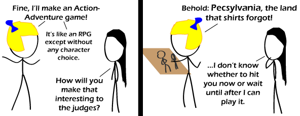

Comic JK 585
When I Feel Like It
⇤
<
?
>
⇥

⇤
<
?
>
⇥
Forum
.
RSS
.
Digg
.
Facebook
.
Reddit
.
Twitter
.
Stumbleupon
Enter your thoughts on number 585 here. Please, no spamming, trolling, or phreaking. Why is Ms. Pacman eating his head? Broader options always make a better game. >Broader shoulders always make a better game. FTFY >>Sounds like he wanted the toggle option. >Play programming. The only limit is yourself. So, basically, Assassin's Creed (WHICH ISN'T AN RPG) > It's a game… you play a role… Oh I get it! There isn't a separate screen for combat, so it's an adventure game. You go on adventures too. >>No there's no player-controlled character development so it's not an RPG >> Name 1 non-card game where you don't play a role. >>> Tetris >>>> So there's basically 10 kinds of games: puzzle games and RPGs >>>>> Do you play a role in Arkanoid, and is that either a puzzle or a card game? >>>>> 3 - puzzle games, rpgs, and click-the-button games. @>>>> ISEEWHATYOUDIDTHAR >>>>>> Pong? beer >>>>>>> BEER IS NO GAME @>most jRPGs aren't really RPGs, either. In an RPG, you get to make decisions to develop your character, in more than just stats. In jRPGs, you have stat customisation (maybe), but you're glued to a scripted story, 100%. Most other RPGs don't have as much as tabletop games, but there's usually some. @>>What rpgs let you make decisions to develop the story? >>> Fallout, all The Elder Scrolls games, and probably some other games, too. >>>> There's too many, so I'll just list the 2 big developers: Bethesda and Bioware.